1과목: 리눅스 실무의 이해
1. 다음 중 최근 운영체제 동향과 관련된 설명으로 틀린 것은?
2. 다음 중 리눅스 커널이 사용된 모바일 운영체제로 틀린 것은?
3. 다음 중 GNU 프로젝트에 의해 개발된 소프트웨어로 틀린 것은?
4. 다음 중 BSD 라이선스에 대한 설명으로 틀린 것은?
5. 다음에서 설명하는 리눅스 배포판으로 알맞은 것은?
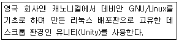
6. 다음에서 설명하는 RAID 레벨로 알맞은 것은?
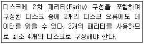
7. 다음 중 부팅 시에 적용되는 파일 순서로 알맞은 것은?
8. 다음에서 설명하는 파일 시스템으로 알맞은 것은?
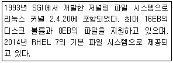
9. 다음 중 ( 괄호 ) 안에 들어갈 내용으로 알맞은 것은?
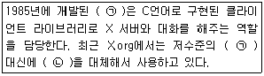
10. 다음 중 KDE와 가장 관련이 있는 라이브러리로 알맞은 것은?
11. 다음 중 최근에 입력한 마지막 5개의 명령어 목록을 출력하는 명령으로 알맞은 것은?
12. 다음 ( 괄호 ) 안에 들어갈 내용으로 알맞은 것은?
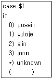
13. 다음 ( 괄호 ) 안에 들어갈 내용으로 알맞은 것은?
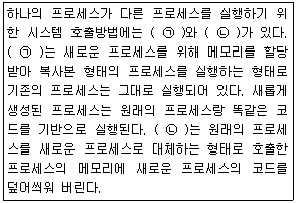
14. 다음 ( 괄호 ) 안에 들어갈 내용으로 알맞은 것은?
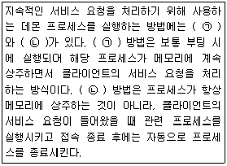
15. 다음 중 백그라운드 프로세스와 가장 관련 있는 특수기호로 알맞은 것은?
16. 다음에서 설명하는 OSI 모델 계층으로 알맞은 것은?
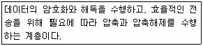
17. 다음 중 일반적인 이더넷 연결에 사용하는 T568B의 배열 순서로 알맞은 것은?
18. 다음 조건일 때 실제 사용 가능한 호스트 IP 주소 개수로 알맞은 것은?(오류 신고가 접수된 문제입니다. 반드시 정답과 해설을 확인하시기 바랍니다.)
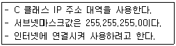
19. 다음 설명과 관련 있는 netstat의 상태값(State)으로 알맞은 것은?
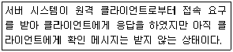
20. 다음 설명과 관련 있는 명령어로 알맞은 것은?
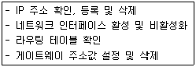
2과목: 리눅스 시스템 관리
21. 다음 /etc/passwd 파일의 필드 설명으로 틀린 것은?
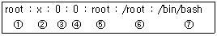
22. 다음 중 그룹에 대한 정보를 변경할 때 사용하는 명령어로 알맞은 것은?
23. 다음 중 fdisk에서 swap 파티션을 생성하기 위한 파일 시스템 형식으로 알맞은 것은?
24. 다음 중 /etc/fstab의 항목으로 틀린 것은?
25. 다음 중 의존성이 걸린 rpm패키지를 강제로 설치하기 위해 사용되는 옵션 조합으로 알맞은 것은?
26. apt-get 패키지 관리 도구를 사용하여 시스템 상에 설치된 모든 패키지들을 최신 버전으로 업그레이드 하려 한다. 다음 중 apt-get upgrade 명령 이전에 반드시 수행되어야 할 명령으로 알맞은 것은?
27. 다음 중 "cd /var/lib/games" 명령 수행 후 최상위 “/” 경로로 이동이 가능한 명령으로 알맞은 것은?
28. 다음 kill 명령의 시그널 중 실행 중인 프로그램을 강제 종료시키는 시그널로 알맞은 것은?
29. 다음 중 uzoogom 계정을 삭제와 동시에 해당 사용자의 디렉터리, 파일 등도 삭제하기 위한 명령으로 알맞은 것은?
30. chage명령어를 사용하여 유저의 패스워드 만료기간을 변경 하였다. 다음 중 변경된 정보가 저장되는 파일로 알맞은 것은?
31. 다음 중 /dev/sda1 디바이스의 배드블록 체크를 위한 명령어로 틀린 것은?
32. 다음 중 스왑 파일(swap file)을 생성하는 순서로 가장 알맞은 것은?
33. 다음 조건에 맞는 유저를 생성하는 방법으로 알맞은 것은?
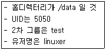
34. 다음 중 rpm의 --force 옵션과 동일한 효과를 내는 조합으로 알맞은 것은?
35. 다음 ( 괄호 ) 안에 알맞는 것은?
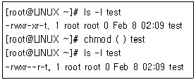
36. 다음 중 yum 명령어를 통해 시스템 업데이트가 불가능한 리눅스 배포판으로 알맞은 것은?
37. 다음 중 tar 파일의 내용을 볼 때 사용하는 옵션으로 알맞은 것은?
38. 다음 중 소스 파일을 컴파일하여 설치 할 때 가장 관련이 없는 명령어로 알맞은 것은?
39. 데비안 패키지 관리인 dpkg에 대한 설명으로 틀린 것은?
40. 다음은 ( 괄호 )안에 들어갈 내용으로 알맞은 것은?
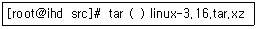
41. 다음 중 장치 파일명 종류가 나머지 셋과 틀린 것은?
42. 다음 화면을 실행하기 위한 명령으로 알맞은 것은?(그림파일이 너무 커서 문제 풀기에 필요한 부분만 잘라 내었습니다. 참고하세요.)
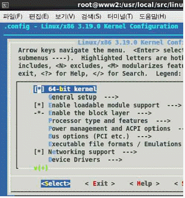
43. 다음에서 설명하는 명령으로 알맞은 것은?
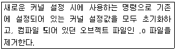
44. 다음 중 모듈을 부팅 시에 활성화시키기 위해서 사용하는 설정 파일이 존재하는 디렉터리로 알맞은 것은?
45. 다음 화면을 실행하기 위한 명령으로 알맞은 것은?
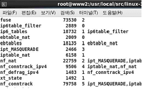
46. 다음 설명으로 알맞은 것은?
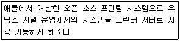
47. 다음 중 프린터 작업을 요청하여 인쇄를 할 때 사용 가능한 명령어 조합으로 알맞은 것은?
48. 다음 설명으로 알맞은 것은?
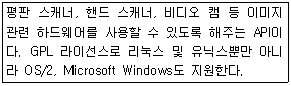
49. 다음 설명으로 알맞은 것은?
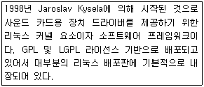
50. 다음 중 리눅스 시스템에 하드디스크를 추가한 후에 사용하는 명령으로 틀린 것은?
51. 다음 중 telnet의 접속 제어 관련 로그가 남는 파일로 알맞은 것은?
52. 다음 중 백업의 종류와 설명이 틀린 것은?
53. 다음 중 백업 및 복원과 관련된 명령어로 틀린 것은?
54. 다음 설명으로 알맞은 것은?
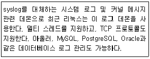
55. 다음 중 dump의 특징으로 틀린 것은?
56. 다음 설정과 같은 경우에 관련 설명으로 틀린 것은?
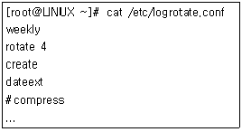
57. 다음 pam 의 구성 토큰과 설명에 대해 알맞은 것은?
58. 다음 명령의 결과와 관련된 설명으로 틀린 것은?
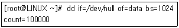
59. 매 시간 정각에 시간을 동기화하는 작업을 crontab에 등록을 하려 한다. 다음 중 관련 설정으로 알맞은 것은?
60. 다음 명령의 결과처럼 uzoogom 유저가 패스워드를 10회 이상 틀려 접속이 불가능한 상태임을 확인 하였다. 다음 중 Failures를 초기화하는 명령으로 알맞은 것은?
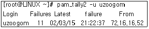
3과목: 네트워크 및 서비스의 활용
61. 다음 중 웹 서버 관련 프로그램의 역할이 나머지 셋과 틀린 것은?
62. 다음 중 리눅스에서 사용가능한 웹 브라우저로 틀린 것은?
63. 다음 설명하는 Apache 2.2의 MPM(Multi-Processing Module)로 알맞은 것은?
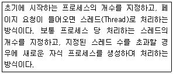
64. 다음 중 아파치 2.2 웹 서버에 PHP를 동적 모듈로 설치했을 경우에 관련 모듈이 생성되는 디렉터리로 알맞은 것은?
65. 다음 중 웹 서버에 JSP(Java Server Page)를 사용하기 위해 설치하는 프로그램 설명으로 알맞은 것은?
66. 다음 중 네트워크 기반 인증 관련 서비스를 제공하는 프로그램 및 프로토콜로 틀린 것은?
67. 다음 중 NIS(Network Information Service)에 대한 설명으로 틀린 것은?
68. 다음 LDAP 속성 중 이름과 성의 조합을 나타내는 키워드로 알맞은 것은?
69. 리눅스 부팅 시에 NIS 도메인명을 자동으로 설정 되도록 하려고 한다. 다음 내용을 설정할 파일로 알맞은 것은?
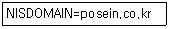
70. 다음은 NIS 클라이언트에서 사용자 정보를 조회하는 과정이다. ( 괄호 )안에 들어갈 내용으로 알맞은 것은?
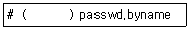
71. 다음 조건일 때 공유 디렉터리에 접근하는 방법으로 알맞은 것은?
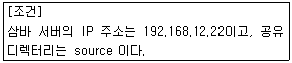
72. 삼바 서버의 환경 설정파일인 smb.conf에서 사용자 홈디렉터리 접근에 관한 설정을 변경하려고 한다. 다음 중 관련 섹션(Section)으로 알맞은 것은?
73. 다음실행 결과를보여주기위한 명령으로알맞은 것은?
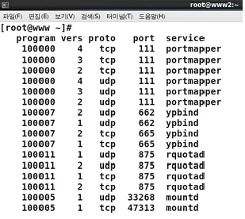
74. 다음 중 /etc/exports에서 클라이언트의 root의 요청을 서버의 root 권한으로 매핑시키기 위해 사용하는 옵션으로 알맞은 것은?
75. 다음과 vsftpd.conf 파일에 설정한 경우에 관련 설명으로 알맞은 것은?
76. 다음 중 메일 관련 프로토콜과 포트번호의 조합으로 알맞은 것은?
77. 다음 중 메일 관련 프로그램의 종류가 나머지 셋과 틀린 것은?
78. 다음 중 sendmail.cf에서 메일서버가 호스트명의 인식을 못할 경우에 강제로 처리하도록 지정하는 항목으로 알맞은 것은?
79. 다음은 사용자가 보내는 메일이 대기하는 큐(Queue)를 조회하는 과정이다. ( 괄호 )안에 들어갈 내용으로 알맞은 것은?
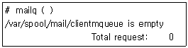
80. 다음 ( 괄호 )안에 들어갈 파일명으로 알맞은 것은?
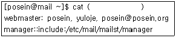
81. 다음 중 DNS 서버에서 사용되는 데몬명으로 알맞은 것은?
82. 다음과 같은 상황일 때 문제점으로 가장 알맞은 것은?
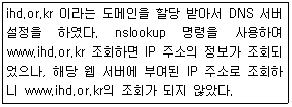
83. 다음은 지정된 네트워크 대역만 네임 서버에 질의 할 수 있도록 설정하는 과정이다. ( 괄호 )안에 들어갈 내용으로 알맞은 것은?
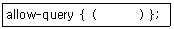
84. 다음은 zone 파일 설정의 일부이다. ( 괄호 )안에 들어갈 내용으로 알맞은 것은?
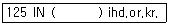
85. 다음은 zone 파일 설정의 일부로 관리자 E-mail 주소를 설정하는 내용이다. ( 괄호 )안에 들어갈 내용으로 알맞은 것은?
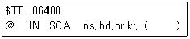
86. 다음 설명하는 내용으로 알맞은 것은?
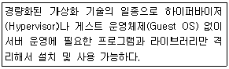
87. 다음 중 전가상화 및 반가상화 기술에 대한 설명으로 틀린 것은?
88. 다음에서 설명하는 XEN 기반 명령으로 알맞은 것은?
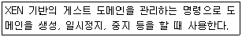
89. 다음은 가상화 운영을 위해 데몬을 실행시키는 명령 이다. ( 괄호 )안에 들어갈 내용으로 알맞은 것은?
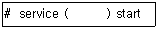
90. 다음에서 설명하는 명령으로 알맞은 것은?
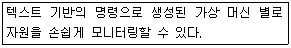
91. 다음 중 xinetd를 사용할 때 가장 효율적인 사례로 알맞은 것은?
92. 다음 중 xinetd 환경설정에서 동시에 서비스할 수 있는 최대 개수를 지정할 때 사용하는 항목으로 알맞은 것은?
93. 다음은 dhcpd.conf의 설정 항목이다. 관련 설명으로 알맞은 것은?
94. 다음의 경우에 구축하면 유용한 서버로 알맞은 것은?
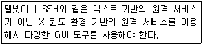
95. 다음 결과를 실행하기 위한 명령어로 알맞은 것은?
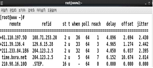
96. 다음 예제와 관련 있는 DoS 공격의 유형으로 알맞은 것은?
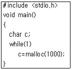
97. 다음에서 설명하는 프로그램으로 알맞은 것은?
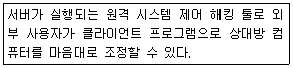
98. 다음 중 사이트 점검을 위한 보안 스캐너의 종류가 나머지 셋과 틀린 것은?
99. 다음의 경우에 필요한 보안 도구로 알맞은 것은?
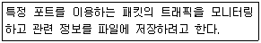
100. 방화벽 프로그램인 iptables를 이용하여 192.168.10.22로 부터 들어오는 패킷들은 차단하는 정책을 추가하려할 때 알맞은 것은?
최근 운영체제 동향은 오픈소스 운영체제의 사용이 증가하고 있으며, 이는 개방적인 특성과 뛰어난 이식성을 지원한다는 장점 때문이다. 또한 가상화 기술을 지원하고 있어 클라우드 컴퓨팅과 같은 새로운 기술에 대한 대응력도 높다. 따라서 "개방적 운영체제에서 폐쇄적 운영체제로 바뀌고 있다."는 설명은 옳지 않다.